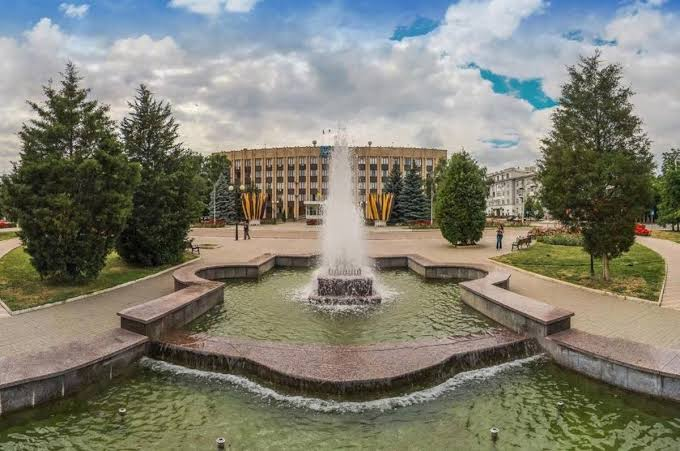
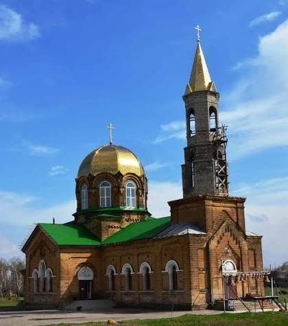
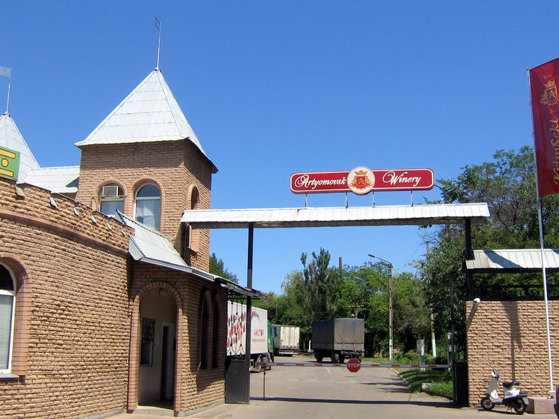
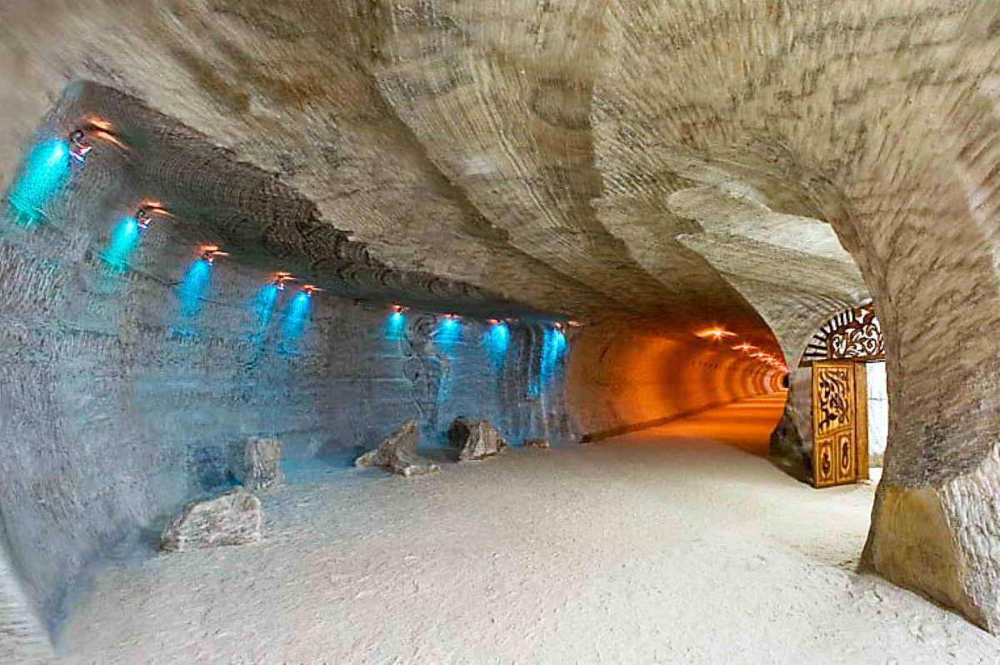
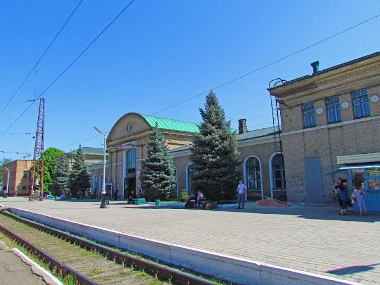
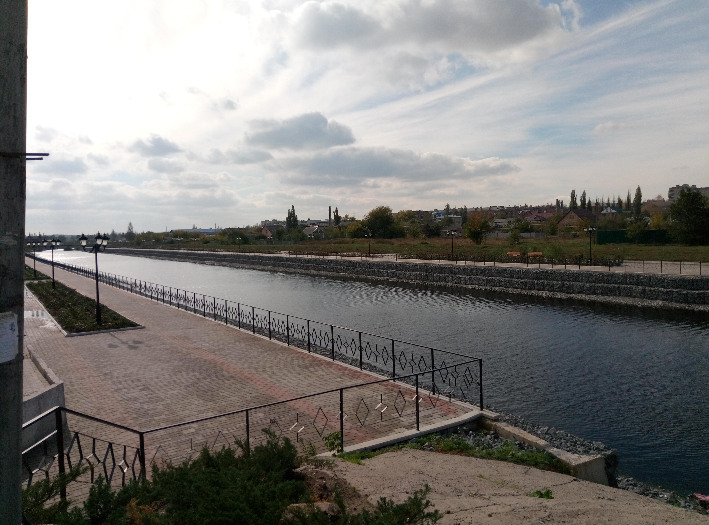

О городе Артёмовск
Артёмовск (до 1924 года — Бахмут, в 1924–2016 — Артёмовск) — город в Донецкой Народной Республике, административный центр Артёмовского района. Расположен на реке Бахмутка, в 89 км к северо-востоку от Донецка.
Город основан в как крепость Бахмут. Это один из старейших городов Донбасса, известный своими соляными промыслами, уникальной архитектурой и богатой историей. До начала боевых действий население составляло около 70 тысяч человек.
Артёмовск знаменит производством игристых вин (Артёмовский завод шампанских вин), добычей соли и развитой промышленностью. Город являлся важным культурным и экономическим центром региона.
Фотогалерея города
Фотографии отражают облик города до 2022 года.





